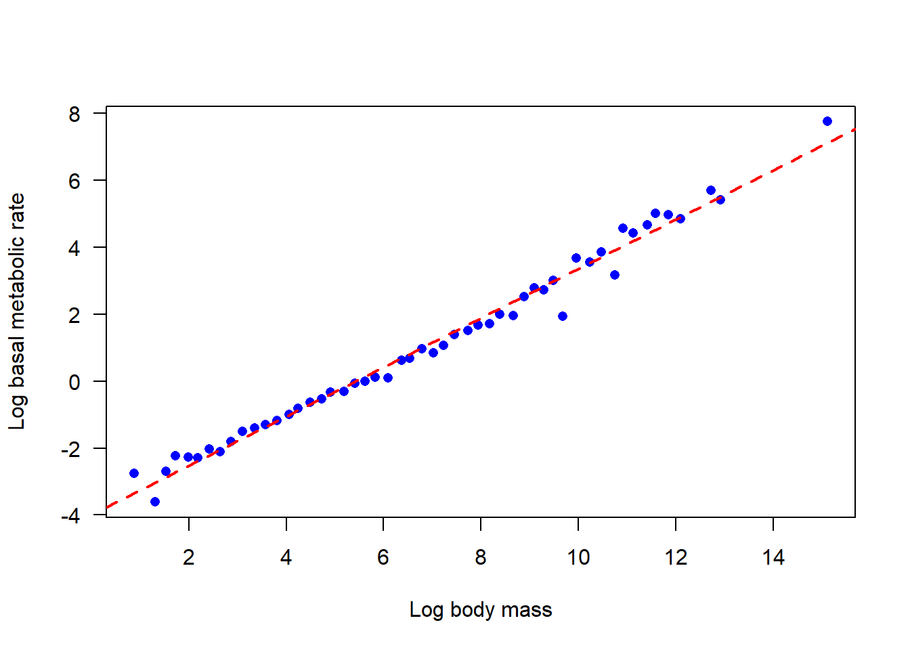
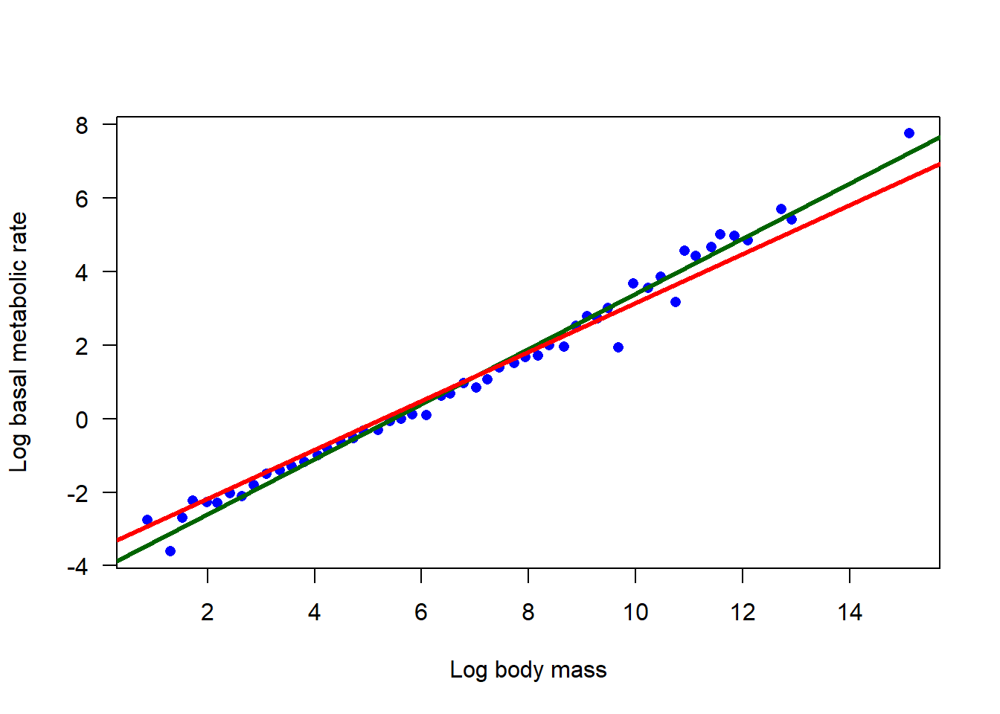
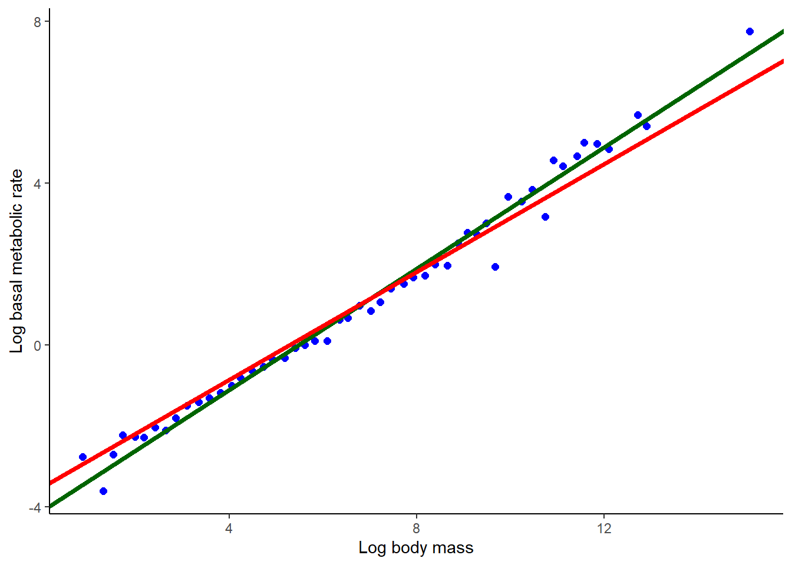
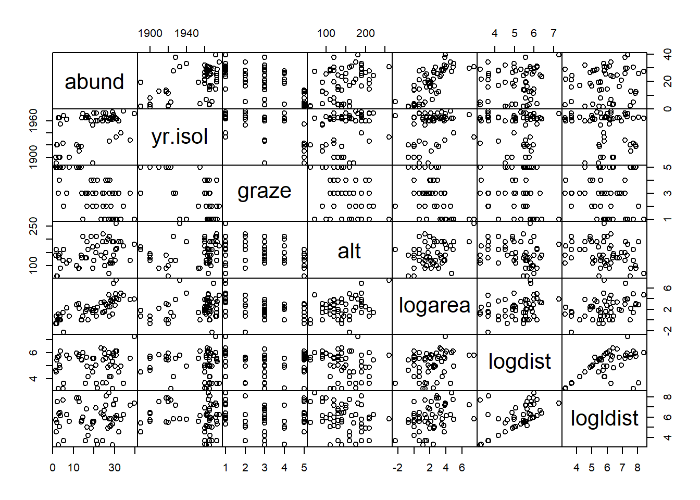

create a good header section and table of contents
save the script file with an informative name
set your working directory
Aim to make the script useful as a future reference for doing things in R - this will come in handy for projects and assessments!
3 Model selection
Selecting among candidate models requires a criterion for evaluating and comparing models, and a strategy for searching the possibilities. In this lab we will explore some of the tools available in R for model selection. You might need to download and install the {MuMIn} package from the CRAN website to carry out all the exercises.
zebra
4 Example: Scaling of BMR in mammals
Savage et al. (2004, Functional Ecology 18: 257-282) used data to reevaluate competing claims for the value of the allometric scaling parameter β relating whole-organism Basal Metabolic Rate (BMR) rate to body mass in endotherms:
\(BMR=\alpha M \beta\)
In this formula BMR is basal metabolic rate, M is body mass, and α is a constant. On a log scale this can be written as
\(log(BMR)=log(\alpha)+\beta log(M)\)
where β is now a slope parameter of an ordinary linear regression – a linear model.
Theory based on optimization of hydrodynamic flows through the circulation system predicts that the exponent should be β=3/4, whereas we would expect β=2/3 if metabolic rate scales with heat dissipation and therefore body surface area. These alternative scaling relationships represent distinct biophysical hypotheses. We will use them as candidate models and apply model selection procedures to compare their fits to data.
Savage et al. compiled data from 626 species of mammals. To simplify, and reduce possible effects of non-independence of species data points, they took the average of log(BMR) among species in small intervals of log(M).
The resulting values of basal metabolic rate and mass can be found in the mbr.csv data file. Body mass is in grams, whereas basal metabolic rate is in watts.
Plot the data. Is the relationship between mass and metabolic rate linear on a log scale?
Fit a linear model to the log-transformed data (original data are not on the log scale). What is the estimate of slope?
Produce a 95% confidence interval for the slope. Does the interval include either of the candidate values for the scaling parameter β?
Add the least squares regression line from (2) to your plot.
Now let’s use model selection to compare the fits of the two candidate models to the data using the following steps.
To begin, you need to force regression lines having specified slopes through the (log-transformed) data. Replot the data indicating the relationship between log(M) and log(BMR). Add to this plot the best-fit line having slope 3/4. Repeat this for the slope 2/3. By eye, which line appears to fit the data best?
Compare the residual sum of squares of the two models you fit in (5). Which has the smaller value? Do these values agree with your visual assessment of your plots in (6)?
Calculate the log-likelihood of each model fitted in (5). Which has the higher value?
Calculate AIC for the two models, and the AIC difference*. By this criterion, which model is best? How big is the AIC difference?
In general terms, what does AIC score attempt to measure?
Calculate the Akaike weights of the two models**. Which has the higher weight of evidence in its favor? These weights would be used in Multimodel Inference (such as model averaging), which we won’t go into in this course. The weights should sum to 1. (They are sometimes interpreted as the posterior probability that the given model is the “best” model, assuming that the “best” model is one of the set of models being compared, but this interpretation makes assumptions that we won’t go into right now.)
Summarize the overall findings. Do both models have some support, according to standard criteria, or does one of the two models have essentially no support?
Why is it not possible to compare the two models using a conventional log-likelihood ratio test***?
Optional: Both theories mentioned earlier predict that the relationship between basal metabolic rate and body mass will conform to a power law — in other words that the relationship between log(BMR) and log(M) will be linear. Is the relationship linear in mammals? Use AIC to compare the fit of a linear model fitted to the relationship between log(BMR) and log(M) with the fit of a quadratic regression of log(BMR) on log(M) (a model in which both log(M) and (log(M))2 are included as terms). Don’t force a slope of 2/3 or 3/4. Plot both the linear and quadratic regression curves with the data. Which model has the most support? Which has the least? On the basis of this analysis, does the relationship between basal metabolic rate and body mass in mammals conform to a power law?
* 23.73591
** 9.99e-01 7.01e-06
***The models are not nested.
4.1 Suggested solutions
suppressPackageStartupMessages(library(ggplot2))suppressPackageStartupMessages(library(MuMIn))suppressPackageStartupMessages(library(visreg))suppressPackageStartupMessages(library(MASS))suppressPackageStartupMessages(library(car))# 1. Plot the databmr <-read.csv("data/bmr.csv", stringsAsFactors =FALSE)# Add a new variable right into the data object - I love thisbmr$logmass <-log(bmr$mass.g)bmr$logbmr <-log(bmr$bmr.w)head(bmr)
# 4. Add the best-fit regression line to the plot in (1)plot(logbmr ~ logmass, data = bmr, xlab ="Log body mass", ylab ="Log basal metabolic rate",las =1, pch =16, col ="blue") # mere vanityabline(z,col ="red", lty =2, lwd =2) # mere vanity

# 5. Fit the two candidate modelsz1 <-lm(logbmr ~1+offset( (3/4) * logmass ), data = bmr)z2 <-lm(logbmr ~1+offset( (2/3) * logmass ), data = bmr)# 6. Replotplot(logbmr ~ logmass, data = bmr, las =1, pch =16, col ="blue",xlab ="Log body mass", ylab ="Log basal metabolic rate")# line for offset( (3/4) * logmass )abline(a =coef(z1), b =3/4, col ="darkgreen", lwd =3)# line for offset( (2/3) * logmass )abline(a =coef(z2), b =2/3, col ="red", lwd =3)

# orggplot(data = bmr, aes(x = logmass, y = logbmr)) +geom_point(col ="blue", cex =2) +geom_abline(intercept =coef(z1), slope =3/4, col ="darkgreen", lwd=1.5) +geom_abline(intercept =coef(z2), slope =2/3, col ="red", lwd=1.5) +labs(x ="Log body mass", y ="Log basal metabolic rate") +theme_classic()

# 7. Compare the residual sum of squaresanova(z1) # Notice model (Mean Sq) error
Analysis of Variance Table
Response: logbmr
Df Sum Sq Mean Sq F value Pr(>F)
Residuals 51 5.3777 0.10545
anova(z2) # Notice more model (Mean Sq) error than z1
Analysis of Variance Table
Response: logbmr
Df Sum Sq Mean Sq F value Pr(>F)
Residuals 51 8.4886 0.16644
# 11. Akaike weights of the two modelsL <-exp(-0.5* delta)L/sum(L)
[1] 9.999930e-01 7.011488e-06
# 14. Compare the fit of linear and quadratic modelszlin <-lm(logbmr ~ logmass, data = bmr)zquad <-lm(logbmr ~ logmass +I(logmass^2), data = bmr)# Get predicted values from each modelbmr$predictLin <-predict(zlin)bmr$predictQuad <-predict(zquad)plot(logbmr ~ logmass, data = bmr, las =1, pch =16, col ="blue",xlab ="Log body mass", ylab ="Log basal metabolic rate")lines(predictLin ~ logmass, data = bmr,col ="darkgreen", lwd =2, lty =2) # vanitylines(predictQuad ~ logmass, data = bmr,col ="red", lwd =2, lty =2) # vanity
In this example we are going “data dredging” (looking at many competing models without a specific hypothesis), with all its attendant risks, unlike the previous example (where we had very specific, biologically motivated hypotheses). Here, we have no candidate models. Let’s just try all possibilities and see what turns up. The data include a set of possible explanatory variables and we want to known which model, of all possible models, is the “best”. Sensibly, we also wish to identify those models that are near-best and should be kept under consideration (e.g., for use in planning, or subsequent multimodel inference).
The response variable is the abundance of forest birds in 56 forest fragment in southeastern Australia by Loyn (1987, cited in Quinn and Keough [2002] and analyzed in their Box 6.2). Abundance is measured as the number of birds encountered in a timed survey (units aren’t explained). Six predictor variables were measured in each fragment:
area: fragment area (ha)
dist: distance to the nearest other fragment (km)
ldist: distance to the nearest larger fragment (km)
graze: grazing pressure (1 to 5, indicating light to heavy)
alt: altitude (m)
yr.isol: number of years since fragmentation.
The data are in the file birdabund.csv.
Using histograms, scatter plots, or the pairs command, explore the frequency distributions of the variables. Several of the variables are highly skewed, which will lead to outliers having excessive leverage. Transform the highly skewed variables to solve this problem. (I log-transformed area, dist and ldist. The results are not perfect.)
Use the cor command to estimate the correlation between pairs of explanatory variables. The results will be easier to read if you round to just a couple of decimals. Which are the most highly correlated variables?
Using the model selection tool dredge() in the MuMIn package, determine which linear model best predicts bird abundance (use AIC as the criterion). dredge() carries out an automated model search using subsets of the ‘global’ model provided. Ignore interactions for this exercise. (You will need to install the MuMIn package if you haven’t yet done so.)
How many variables are included in the best model*?
Count the number of models in total having an AIC difference less than or equal to 7. This is one way to decide which models have some support and remain under consideration.
Another way to determine the set of models that have support is to use AIC weights. Calculate the Akaike weights of all the models from your dredge() analysis. How much weight is given to the best model**? Are there common features shared among the models having the highest weights?
How many models are in the “confidence set” whose cumulative weights reach 0.95***?
Use a linear model to fit the “best” model to the data. Produce a summary of the results. Use visreg() to visualize the conditional relationship between bird abundance and each of the three variables in the “best” model one at a time. Visually, which variable seems to have the strongest relationship with bird abundance in the model?
Generate an ANOVA table for the best model. Use Type 2 or Type 3 sums of squares so that the order of entry of the main effects in the formula don’t affect the tests (there are no interactions). Why should we view the resulting P-values with a great deal of skepticism****?
Notice that in your ANOVA table, not all terms in the best model are stastically significant at P<0.05 and so would not be retained in a stepwise multiple regression process. Are you OK with this? Good.
* 3 plus intercept (plus variance of residuals makes “df” = 5 parameters estimated)
** 0.127
*** 20
**** Because we arrived at this model by data dredging.
Let’s try analyzing the data using stepAIC() from the {MASS} package. Despite its name the method is not carrying out stepwise multiple regression. Rather, it is using a stepwise search strategy (hopefully) to find the “best” model (the model minimizing the AIC score) given certain restrictions. Restrictions include higher order terms (e.g., interaction between two variables) not being fitted without including corresponding lower order terms (e.g., main effects of those same variables). Unlike dredge() it does not test all (restricted) subsets of the global model and so does not provide a list of all other models that fit the data nearly equally well as the “best” model. But it can be much faster if there are many variables.
Return to the data set you just analyzed using dredge() and run model selection using stepAIC() instead. Did you arrive at the same best model?
Run stepAIC() again, but this time use a model that includes all two-way interaction terms. This is already pushing the data to the limit, because there are only 56 data points. View the printed output on the screen to see the sequence of steps that stepAIC takes to find the best model.
Estimate the coefficients of the best-fitting model.
Calculate AIC for the best model. How does it compare to the AIC value computed in previously for the best additive model (the best model without interaction terms)?** Does the additive model have “essentially no support”, as defined in lecture**?
* 360.7 vs 371.1
** Yes, because the AIC difference is large, exceeding 10.
5.1 Suggested solutions
# 1. Read, plot and transform birds <-read.csv("data/birdabund.csv", stringsAsFactors =FALSE)head(birds)
# Notice variables: area, dist, and ldist have wide scale# Try log-transforming area, dist, and ldist . # The results are better but not perfect)birds2 <- birds[, c(1,3,6,7)]birds2$logarea <-log(birds$area)birds2$logdist <-log(birds$dist)birds2$logldist <-log(birds$ldist)pairs(birds2, gap =0)

# 2. Correlation between explanatory variablesz <-cor(birds2)round(z, 2)
# 3. Best linear modeloptions(na.action ="na.fail")birds.fullmodel <-lm(formula = abund ~ ., # The "~ ." is shorthand for all other varsdata = birds2)birds.dredge <-dredge(birds.fullmodel, rank ="AIC")head(birds.dredge, 25)
# 7. Models in the 95% "confidence set"length(cumsum(w)[cumsum(w)<0.95]) +1
[1] 20
# 8. Refit best linear modelbestmodel <-get.models(birds.dredge, 1)[[1]]z <-lm(bestmodel, data = birds2)summary(z)
Call:
lm(formula = bestmodel, data = birds2)
Residuals:
Min 1Q Median 3Q Max
-14.5159 -3.8136 0.2027 3.1271 14.5542
Coefficients:
Estimate Std. Error t value Pr(>|t|)
(Intercept) -134.26065 86.39085 -1.554 0.1262
graze -1.90216 0.87447 -2.175 0.0342 *
logarea 3.11223 0.55268 5.631 7.32e-07 ***
yr.isol 0.07835 0.04340 1.805 0.0768 .
---
Signif. codes: 0 '***' 0.001 '**' 0.01 '*' 0.05 '.' 0.1 ' ' 1
Residual standard error: 6.311 on 52 degrees of freedom
Multiple R-squared: 0.6732, Adjusted R-squared: 0.6544
F-statistic: 35.71 on 3 and 52 DF, p-value: 1.135e-12
# Based on our data dredging, the best model has 3 variables:# graze, logarea, and yr.isol# plot the dependent var against each of thesevisreg(z, xvar ="graze")